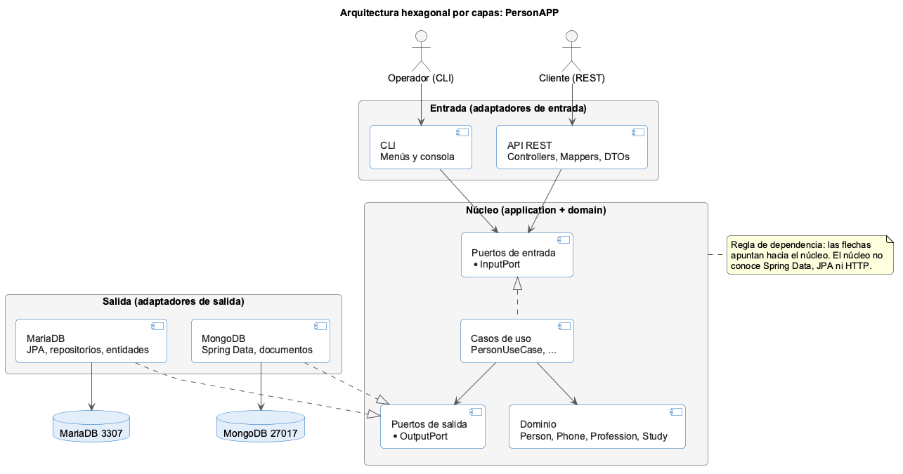
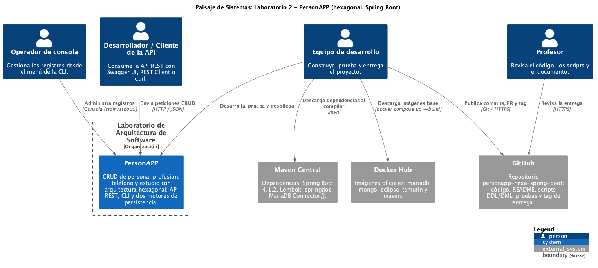
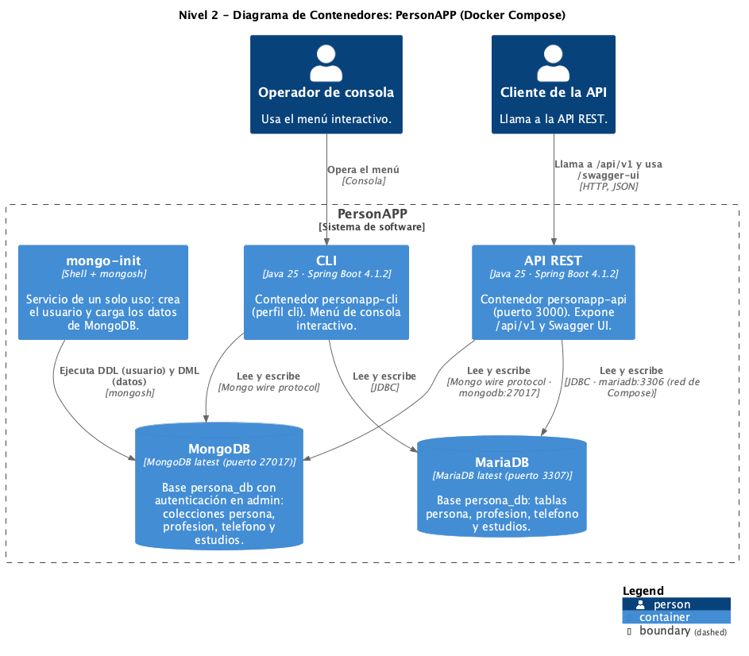
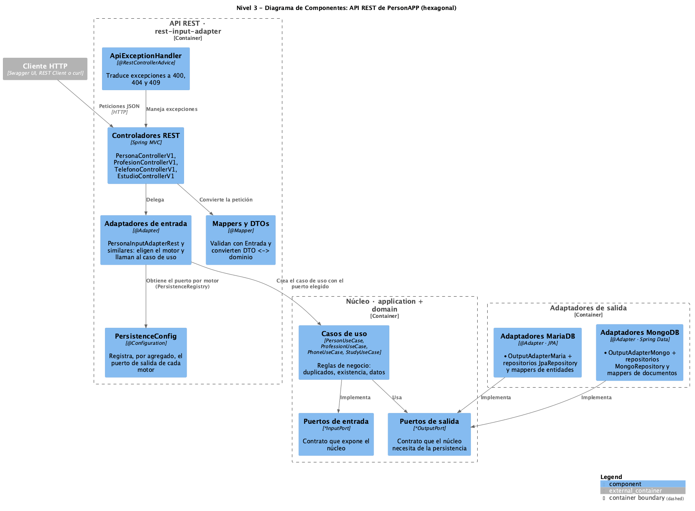
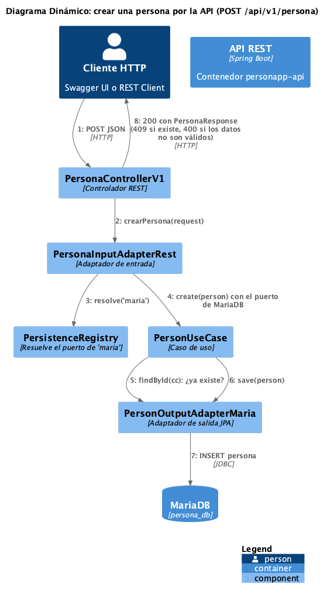

Universidad: Pontificia Universidad Javeriana
Facultad: Ingeniería de Sistemas
Materia: Arquitectura de Software
Profesor: Andrés Sánchez
Integrantes: José Eduardo Valeriano Castiblanco (completar los demás integrantes)
Fecha: 15 de noviembre de 2026
Ciudad: Bogotá D.C.
Repositorio: https://github.com/joseval29/personapp-hexa-spring-boot
Entrega (tag v1.0.0): https://github.com/joseval29/personapp-hexa-spring-boot/tree/v1.0.0 (pendiente de crear el tag)
Arquitectura hexagonal (puertos y adaptadores). Alistair Cockburn propuso en 2005 separar la aplicación en un núcleo (las reglas de negocio) y en adaptadores que conectan el núcleo con el mundo exterior. Los puertos son las interfaces que el núcleo expone (de entrada) o necesita (de salida). Los adaptadores implementan esos puertos: un adaptador REST o de consola llama al núcleo, y un adaptador de MariaDB o de MongoDB es llamado por el núcleo. La ventaja es que el núcleo no depende de Spring, de HTTP ni de una base de datos concreta, y por eso se puede probar sin levantar nada de eso.
Clean Architecture. Robert C. Martin describe una estructura similar en capas concéntricas, con la regla de dependencia: las dependencias apuntan hacia adentro, hacia las entidades y los casos de uso. En PersonAPP, el módulo domain contiene las entidades, application los casos de uso y los puertos, y los módulos *-adapter contienen los detalles.
Patrón Repository y servicio. El repositorio abstrae el acceso a datos (en este proyecto, JpaRepository y MongoRepository quedan dentro de los adaptadores de salida). El servicio de la guía corresponde aquí a los casos de uso (PersonUseCase, ProfessionUseCase, PhoneUseCase, StudyUseCase), que implementan las reglas: no crear duplicados, no editar ni eliminar lo que no existe y no guardar referencias a personas inexistentes.
Spring Boot e inyección de dependencias. Spring Boot configura automáticamente la aplicación a partir de dependencias y propiedades. Las anotaciones @Adapter, @UseCase, @Port y @Mapper del módulo common son alias de @Component, de modo que Spring las registra como beans. Desde Spring Boot 4 algunas propiedades de conexión cambiaron de prefijo (por ejemplo, la conexión de MongoDB ahora se configura con spring.mongodb.uri).
Persistencia. MariaDB se accede con JPA/Hibernate mediante entidades con anotaciones (@Entity, @EmbeddedId, @ManyToOne). MongoDB se accede con Spring Data, usando documentos (@Document) y referencias (@DocumentReference), que se guardan como el identificador del otro documento y no como un DBRef.
REST y códigos de estado. REST modela la API como recursos (/api/v1/persona/{database}/{id}) manipulados con verbos HTTP. Los códigos indican el resultado: 200 (operación exitosa con cuerpo), 204 (eliminación exitosa sin cuerpo), 400 (datos inválidos), 404 (no existe), 409 (ya existe o referencia inexistente).
OpenAPI 3 y Swagger. springdoc-openapi 3.2.0 genera la especificación OpenAPI 3 y la interfaz Swagger UI, en /swagger-ui.html.
Interfaz de consola (CLI). Un adaptador de entrada alternativo ofrece los mismos casos de uso desde un menú interactivo, sin cambiar el núcleo. Es la demostración práctica de que la arquitectura permite agregar entradas nuevas.
Docker y Docker Compose. Docker empaqueta los servicios en contenedores y Compose los orquesta. En este proyecto Compose levanta MariaDB, MongoDB, un servicio de inicialización de MongoDB, la API y la CLI como perfil opcional.
Principios SOLID. La separación en puertos segregados (ISP), el registro de motores (DIP y OCP) y el contrato de los puertos (LSP) se aplicaron de forma explícita. Están documentados en el README del proyecto.
Pruebas. Se distinguen pruebas unitarias (casos de uso, mappers, controladores y menús con dependencias simuladas) y pruebas de integración (la API real contra las bases de datos en Docker).
El modelo entregado en el enunciado tiene cuatro entidades. En MariaDB se implementó con el DDL de scripts/persona_ddl_maria.sql:
| Tabla | Clave primaria | Campos | Relaciones |
|---|---|---|---|
persona |
cc (INT 15) |
nombre (VARCHAR 45), apellido (VARCHAR 45), genero (ENUM 'M','F'), edad (INT 3) | 1:N con telefono y con estudios |
profesion |
id (INT 6) |
nom (VARCHAR 90), des (TEXT) | 1:N con estudios |
estudios |
(id_prof, cc_per) |
fecha (DATE), univer (VARCHAR 50) | N:M entre persona y profesion |
telefono |
num (VARCHAR 15) |
oper (VARCHAR 45), duenio (INT 15) | N:1 con persona (clave foránea duenio) |
En MongoDB, cada entidad es una colección (persona, profesion, telefono, estudios). Las referencias se guardan como el identificador del documento relacionado. Un estudio tiene como _id la combinación cédula-idProfesion, que replica la clave compuesta de MariaDB.
Decisiones sobre el modelo. El esquema usa utf8mb4 para conservar tildes y eñes (sin esto los acentos se guardaban corruptos). La fecha de grado es LocalDate en la entidad JPA, porque la clase java.util.Date estaba deprecada y devolvía tipos sin soporte para toInstant().
El diagrama muestra las capas y la regla de dependencia: los adaptadores de entrada (API REST y CLI) y de salida (MariaDB y MongoDB) dependen del núcleo, y el núcleo no depende de ninguno de ellos.

Fuente: diagramas/08_arquitectura_capas.puml.
| Módulo | Responsabilidad | Clases principales |
|---|---|---|
common |
Anotaciones, excepciones, motores y validación compartida | DatabaseOption, PersistenceRegistry, Entrada, AlreadyExistException, NoExistException, InvalidOptionException |
domain |
Modelo del dominio | Person, Phone, Profession, Study, Gender |
application |
Puertos y casos de uso | PersonInputPort, PersonOutputPort, PersonUseCase, ProfessionUseCase, PhoneUseCase, StudyUseCase |
maria-output-adapter |
Adaptadores de salida con JPA | PersonOutputAdapterMaria, ProfessionOutputAdapterMaria, PhoneOutputAdapterMaria, StudyOutputAdapterMaria; entidades y repositorios JpaRepository |
mongo-output-adapter |
Adaptadores de salida con Spring Data | PersonOutputAdapterMongo (con cascada), ProfessionOutputAdapterMongo, PhoneOutputAdapterMongo, StudyOutputAdapterMongo; documentos y repositorios MongoRepository |
rest-input-adapter |
API REST | PersonaControllerV1, ProfesionControllerV1, TelefonoControllerV1, EstudioControllerV1, ApiExceptionHandler, PersistenceConfig |
cli-input-adapter |
Menú de consola | PersonaMenu, ProfesionMenu, TelefonoMenu, EstudioMenu, MenuBase |
personapp-hexa-spring-boot/ (raíz del repositorio, git)
├── pom.xml padre Maven (Spring Boot 4.1.2, Java 25)
├── Dockerfile build multietapa; MODULE=rest-input-adapter | cli-input-adapter
├── docker-compose.yml MariaDB, MongoDB, mongo-init, api y cli
├── personapp.http peticiones de prueba (REST Client)
├── docker/mongo-init.sh carga el DDL y DML de MongoDB
├── scripts/ DDL y DML de MariaDB y MongoDB
├── tests/run-integration-tests.sh levanta Docker Compose y corre las pruebas de integración
├── docs/ este documento y diagramas C4
├── common/ anotaciones, excepciones, Entrada, PersistenceRegistry
├── domain/ Person, Phone, Profession, Study
├── application/ puertos y casos de uso
├── maria-output-adapter/ JPA: entidades, repositorios y mappers
├── mongo-output-adapter/ Spring Data: documentos, repositorios y mappers
├── rest-input-adapter/ API REST: controladores, adaptadores, mappers, DTOs y configuración
└── cli-input-adapter/ menú de consola
Todas las rutas empiezan por /api/v1. {database} puede ser maria o mongo; cualquier otro valor responde 400.
| Recurso | GET lista | GET por id | POST | PUT | DELETE |
|---|---|---|---|---|---|
/persona |
/{database} (200) |
/{database}/{cc} (200 / 404) |
/ (200 / 400 / 409) |
/{database}/{cc} (200 / 400 / 404) |
/{database}/{cc} (204 / 404) |
/profesion |
/{database} (200) |
/{database}/{id} (200 / 404) |
/ (200 / 400 / 409) |
/{database}/{id} (200 / 400 / 404) |
/{database}/{id} (204 / 404) |
/telefono |
/{database} (200) |
/{database}/{numero} (200 / 404) |
/ (200 / 400 / 409) |
/{database}/{numero} (200 / 400 / 404) |
/{database}/{numero} (204 / 404) |
/estudio |
/{database} (200) |
/{database}/{cc}/{idProf} (200 / 404) |
/ (200 / 400 / 409) |
/{database}/{cc}/{idProf} (200 / 400 / 404) |
/{database}/{cc}/{idProf} (204 / 404) |
Las peticiones de ejemplo de cada endpoint están en personapp.http.
if por base de datos. Cada adaptador de entrada recibe un PersistenceRegistry con el puerto de cada motor. Agregar un motor no obliga a cambiar los adaptadores de entrada (principio abierto/cerrado y de inversión de dependencias).PersonInputPort un método de salida que no le correspondía (principio de segregación de interfaces).Entrada valida los datos en la API y en la CLI con los mismos límites del esquema: DNI y ids positivos, texto con longitud máxima (45, 90, 15, 50), edad entre 0 y 150, género M o F, y fechas yyyy-MM-dd. Las entradas inválidas responden 400 en lugar de 409 o 500.CascadeType.ALL). En MongoDB la hacen explícitamente los adaptadores: al eliminar una persona se borran sus teléfonos y estudios, y al eliminar una profesión se borran sus estudios.POST responden 200 con el cuerpo creado (no 201) para mantener un formato uniforme con los demás verbos; esta es una decisión que se puede cambiar.SPRING_DATASOURCE_URL, SPRING_MONGODB_URI), así que el mismo código corre en Docker y en local.mongo-init carga el DDL y el DML después de que el servidor responde, con credenciales explícitas. La imagen oficial de MongoDB no ejecutaba los scripts con las credenciales correctas.Los diagramas siguen el modelo C4 de Simon Brown, con los mismos niveles de zoom del laboratorio uno: del paisaje del sistema hasta el código. Se incluyen dos dinámicos (un POST y un borrado en cascada) y el despliegue en Docker.
Paisaje del sistema. Quién usa PersonAPP y qué sistemas externos intervienen (GitHub, Maven Central y Docker Hub).

Nivel 1, contexto. El operador de la consola, el cliente de la API y el sistema como una sola caja.
Nivel 2, contenedores. La API, la CLI, MariaDB, MongoDB y el servicio mongo-init, dentro de Docker Compose.

Nivel 3, componentes. Los controladores, los adaptadores de entrada, los casos de uso, los puertos y los adaptadores de salida, con la configuración de motores.

Nivel 4, código. Las clases principales del flujo de Persona, con sus métodos y las excepciones que cada uno lanza.

Dinámico: crear persona por la API. Recorrido de un POST /api/v1/persona hasta la inserción en MariaDB, con la verificación de duplicados.

Dinámico: eliminar persona en MongoDB (borrado en cascada). Recorrido de un DELETE que borra primero los estudios, después los teléfonos y al final la persona.

Despliegue. Docker Desktop en macOS con la red de Compose, los cuatro servicios, el servicio de inicialización y los volúmenes de datos.

Todas las fuentes están en docs/diagramas/ y el índice en docs/diagramas/LEEME.md.
Trabajamos en macOS con chip Apple Silicon. Se usó Docker Desktop para las bases de datos y para la ejecución del proyecto, de modo que el único requisito local es Docker. Para compilar sin Docker se usó Maven con JDK 25.
| Componente | Versión | Uso |
|---|---|---|
| macOS | arm64 (Apple Silicon) | Sistema de desarrollo |
| Docker Desktop / Compose | 29.2.0 / v5.0.2 | Contenedores |
| JDK | 25 (Temurin en la imagen; OpenJDK 25 en local) | Compilación y ejecución |
| Maven | 3.9+ | Construcción de los módulos |
| Spring Boot | 4.1.2 | Framework de la aplicación |
| Lombok | 1.18.48 | Reducción de código repetido |
| springdoc-openapi | 3.2.0 | Swagger UI y OpenAPI 3 |
| MariaDB Connector/J | 4.0.0 | Controlador JDBC |
| MariaDB | latest (probado con 13.0.2) | Base relacional |
| MongoDB | latest (probado con 9.0.4) | Base documental |
Paso 1. Revisión de la plantilla. Se hizo un fork del repositorio plantilla de la materia y se revisó su código. Con JDK 11 compilaba; con JDK 21 fallaba porque Lombok 1.18.26 no es compatible con ese compilador.
Paso 2. Migración. Se migró a JDK 25 y Spring Boot 4.1.2 porque se pidió usar las versiones más recientes. Esto implicó cambiar javax.persistence por jakarta.persistence, reemplazar spring-boot-starter-web por spring-boot-starter-webmvc y actualizar springdoc.
Paso 3. Ejecución del original. Para comparar, se ejecutó la plantilla sin cambios en una copia aparte. No arranca como jar ejecutable porque el pom no hereda el padre de Spring Boot, y su DML de MongoDB inserta en la base prueba_db en lugar de persona_db. Su endpoint POST responde 500 y no existen los endpoints de consulta por id, edición ni eliminación.
Paso 4. Levantar el stack. docker compose up -d --build levanta MariaDB (puerto 3307), MongoDB (puerto 27017), el servicio mongo-init, la API (puerto 3000) y la CLI como perfil opcional.
Paso 5. Carga de datos. MariaDB ejecuta al crearse persona_ddl_maria.sql y persona_dml_maria.sql. MongoDB los ejecuta el servicio mongo-init, que crea el usuario y carga los datos después de que el servidor responde.
Paso 6. Verificación. Tras levantar el stack desde cero: 5 personas, 3 profesiones, 4 teléfonos y 4 estudios en cada base, y cero errores en el log de la API.
Paso 7. CRUD REST y CLI. Se implementaron los puertos, los casos de uso, los adaptadores de salida para MariaDB y MongoDB, los controladores, los adaptadores de entrada, los mappers y los menús de consola para los cuatro módulos.
Paso 8. Corrección de defectos. Durante las pruebas se encontraron y corrigieron los siguientes defectos:
| Defecto | Causa | Solución |
|---|---|---|
| Listado de personas con 500 | Hibernate devolvía java.sql.Date y toInstant() no está soportado |
Fecha de grado como LocalDate |
| Un POST con id existente sobrescribía el registro | save() hace merge |
Verificación de existencia y respuesta 409 |
Acentos corruptos (Diseña) |
El esquema no definía utf8mb4 |
utf8mb4 en esquema y tablas |
| MongoDB sin autenticación | Spring Boot 4 ignoraba las propiedades de usuario | URI con authSource=admin |
| Referencias lazy de MongoDB con id nulo | Las referencias perezosas no resolvían el id | Carga eager de las referencias |
| Teléfono o estudio con dueño inexistente producía 500 | Error de referencia no traducido | Validación y respuesta 409 |
Género X daba 409 con mensaje engañoso |
MariaDB solo admite M y F |
Validación con respuesta 400 |
| Fecha mal formada producía 500 | DateTimeParseException no estaba en el manejador |
Manejo en 400 |
| El runner de pruebas hacía fallar MariaDB | Un .sh dentro de scripts/ se ejecuta al inicializar la base |
Runner movido a tests/ |
Paso 9. Revisión de SOLID. Se refactorizó el registro de motores, se segregó el puerto de entrada y se corrigió el contrato de Mongo. El detalle está en la sección 2.6.
Paso 10. Compilación. mvn clean install compila los siete módulos y ejecuta las pruebas unitarias.
Paso 11. Ejecución con Docker. docker compose up -d --build levanta el stack completo. La API responde en http://localhost:3000/api-docs y Swagger en http://localhost:3000/swagger-ui.html.
Paso 12. Ejecución de la CLI. docker compose run --rm cli abre el menú interactivo.
Paso 13. Pruebas unitarias. mvn clean verify ejecuta 67 pruebas, todas en verde:
| Módulo | Pruebas | Qué cubren |
|---|---|---|
common |
10 | Registro de motores, DatabaseOption y validación Entrada |
application |
17 | Casos de uso de persona, profesión, teléfono y estudio, con puertos simulados |
maria-output-adapter |
5 | Mappers de MariaDB: ida y vuelta, lectura superficial y clave compuesta |
mongo-output-adapter |
5 | Mappers de MongoDB: referencias por id y fechas |
rest-input-adapter |
22 | Mappers REST y contratos HTTP de los controladores (200, 204, 400, 404, 409) |
cli-input-adapter |
8 | Flujos de los menús con entrada simulada |
Paso 14. Pruebas de integración. tests/run-integration-tests.sh levanta el stack, espera a que la API responda y ejecuta 19 pruebas contra la API real, en MariaDB y en MongoDB. Cubren el CRUD completo de los cuatro módulos, los duplicados (409), las entradas inválidas (400), la base inválida (400), las referencias inexistentes (409) y las cascadas en ambas bases. Resultado: 19 de 19 en verde.
Paso 15. Pruebas manuales. Se probaron a mano casos límite con curl (DNI negativo, texto demasiado largo, fechas mal formadas, teléfono vacío y campos faltantes) y se corrigieron los defectos que aparecieron. Las peticiones de todos los endpoints están en personapp.http, y las 24 se verificaron contra la API con los códigos esperados.
Paso 16. Pruebas de la CLI. Se ejecutó la CLI en Docker con guiones de entrada completos en ambas bases: crear, buscar, editar, eliminar, duplicados, referencias inexistentes y opciones inválidas.
Paso 17. Commits. Los cambios están en la rama feature/crud-hexa-docker del fork, con mensajes descriptivos y sin atribuciones automáticas. El Pull Request #1 compara la rama con main.
Paso 18. Tag de entrega (pendiente). La entrega se marcará con el tag anotado v1.0.0 sobre la rama principal, con el mensaje "Entrega Laboratorio 2".
scripts/ hacía que MariaDB fallara al inicializarse, porque la imagen ejecuta todos los .sh de esa carpeta.Alistair Cockburn. (2005). Hexagonal architecture. https://alistair.cockburn.us/hexagonal-architecture/
Brown, S. (2018). The C4 model for visualising software architecture. https://c4model.com/
Fielding, R. T. (2000). Architectural styles and the design of network-based software architectures [Tesis doctoral, University of California, Irvine]. https://www.ics.uci.edu/~fielding/pubs/dissertation/top.htm
Fowler, M. (2002). Patterns of Enterprise Application Architecture. Addison-Wesley.
Martin, R. C. (2017). Clean Architecture: A Craftsman's Guide to Software Structure and Design. Prentice Hall.
OpenAPI Initiative. (2021). OpenAPI Specification 3.0.3. https://spec.openapis.org/oas/v3.0.3
Spring. Spring Boot reference documentation (versión 4.1). https://docs.spring.io/spring-boot/reference/
Spring. Spring Data MongoDB reference documentation. https://docs.spring.io/spring-data/mongodb/reference/
springdoc. springdoc-openapi documentation. https://springdoc.org/
MariaDB Foundation. MariaDB Knowledge Base. https://mariadb.com/kb/en/
MongoDB, Inc. MongoDB Manual. https://www.mongodb.com/docs/manual/
Docker Inc. Docker Compose documentation. https://docs.docker.com/compose/
PlantUML y C4-PlantUML. https://plantuml.com/ · https://github.com/plantuml-stdlib/C4-PlantUML
Project Lombok. Lombok features. https://projectlombok.org/features/